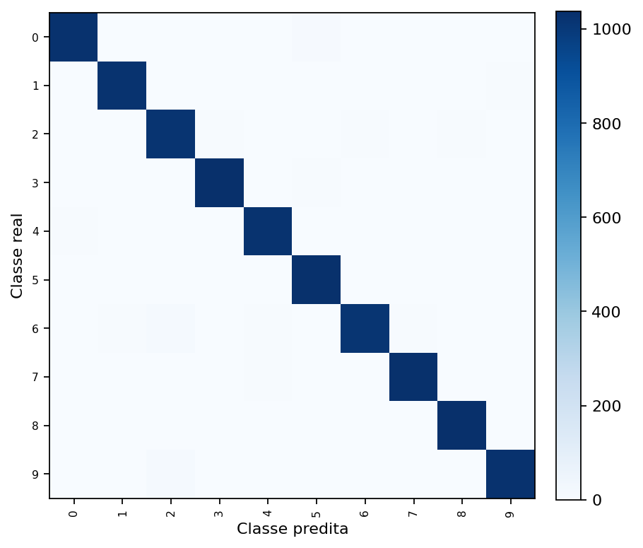
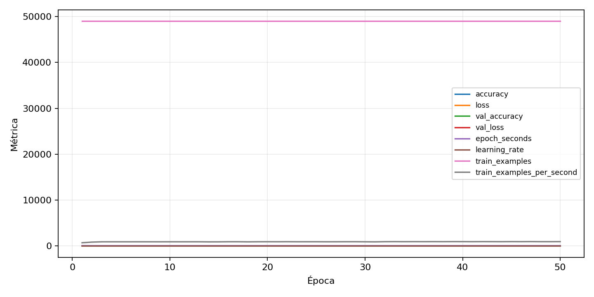

| n_samples | 10500 |
|---|---|
| loss | 0.12382450699806213 |
| accuracy | 0.978 |
| balanced_accuracy | 0.978 |
| macro_f1 | 0.9780024802265164 |


| Índice | Classe | Suporte | Precisão | Recall | F1 |
|---|---|---|---|---|---|
| 0 | 0 | 1050 | 0.9865384615384616 | 0.9771428571428571 | 0.9818181818181818 |
| 1 | 1 | 1050 | 0.9846301633045149 | 0.9761904761904762 | 0.9803921568627451 |
| 2 | 2 | 1050 | 0.9613572101790764 | 0.9714285714285714 | 0.9663666508763619 |
| 3 | 3 | 1050 | 0.9801699716713881 | 0.9885714285714285 | 0.9843527738264579 |
| 4 | 4 | 1050 | 0.9761222540592168 | 0.9733333333333334 | 0.9747257987601335 |
| 5 | 5 | 1050 | 0.9744801512287334 | 0.981904761904762 | 0.9781783681214421 |
| 6 | 6 | 1050 | 0.9788053949903661 | 0.9676190476190476 | 0.9731800766283525 |
| 7 | 7 | 1050 | 0.9744801512287334 | 0.981904761904762 | 0.9781783681214421 |
| 8 | 8 | 1050 | 0.9810246679316889 | 0.9847619047619047 | 0.9828897338403043 |
| 9 | 9 | 1050 | 0.9827586206896551 | 0.9771428571428571 | 0.9799426934097422 |
{"adapter":"kmnist","balance_mode":"all_raw","class_names":["0","1","2","3","4","5","6","7","8","9"],"dataset":"kmnist","dataset_options":{},"dataset_root":"/home/msduda/datasets-tcc/kmnist","native_channels":1,"normalization":"unit_interval","num_classes":10,"protocol":{"checkpoint_monitor":"val_macro_f1","dtype_policy":"mixed_float16","early_stopping":{"patience":50,"restore_best_weights":true},"evaluation_augmentation":false,"input_channels":"native","optimizer":"Adam","pretrained_weights":false,"reduce_lr_on_plateau":{"factor":0.3,"min_lr":1e-07,"patience":50},"resize":"proportional_padding","test_time_augmentation":false,"training_from_scratch":true},"seed":42,"source_fingerprint":"8928d478d8d23938a73b4f4a92c407bf3d74beff1e0e67e3644d6ecdc30cf828","source_manifest":{"class_names":["0","1","2","3","4","5","6","7","8","9"],"joined_samples":70000,"metadata":{"layout":"kmnist-component-npz"},"name":"kmnist","native_channels":1,"source_path":"/home/msduda/datasets-tcc/kmnist","splits":{"test":10000,"train":60000},"target_size":64},"target_size":64,"test_fraction":0.15,"train_fraction":0.7,"training":{"augmentation":{"brightness_delta":0.0,"contrast_lower":1.0,"contrast_upper":1.0,"cutout_max_frac":0.0,"cutout_prob":0.0,"flip_lr":false,"noise_std":0.0,"translate_frac":0.0,"zoom_max":1.0,"zoom_min":1.0},"batch_size":208,"default_image_size":64,"dtype_policy":"mixed_float16","early_stopping_patience":50,"extra_fraction":0.0,"image_size_overrides":{"gtsrb":128},"keras_verbose":1,"learning_rate":0.0003,"max_epochs":50,"preprocess_cache_max_mib":0,"reduce_lr_factor":0.3,"reduce_lr_min_lr":1e-07,"reduce_lr_patience":50,"shuffle_buffer_max_mib":0},"validation_fraction":0.15}
{"epochs_completed":50,"epochs_recorded":50,"evaluation_seconds":21.15753568099899,"fit_seconds_current_attempt":3231.942051995,"max_epoch_seconds":69.9987528720012,"max_epochs":50,"mean_epoch_seconds":53.28126242822007,"mean_train_examples_per_second":921.5238029623847,"median_train_examples_per_second":925.1743214207037,"min_epoch_seconds":51.111705768998945,"selected_checkpoint":"/mnt/e/tcc-benchmark/outputs/kmnist-alldata-noaug-batch-sweep-2026-08-06/batch-208/kmnist/runs/kmnist__unit_interval__all_raw__seed-42/checkpoints/best.keras","total_seconds":2664.0631214110035,"training_seconds":2664.0631214110035,"wall_seconds_current_attempt":3256.5400367210023}
{"elapsed_seconds":3256.58565963,"event_counts":{"data_preparation_end":1,"data_preparation_start":1,"epoch_end":50,"evaluation_end":1,"evaluation_start":1,"fit_end":1,"fit_start":1,"periodic":642,"run_completed":1,"train_start":1},"generated_at":"2026-08-07T14:19:46.550+00:00","gpu_backend":"pynvml","interval_seconds":5.0,"metrics":{"cpu_percent":{"count":700,"max":17.2,"mean":13.05342857142857,"min":0.0,"p50":13.2,"p95":16.6},"disk_data_free_bytes":{"count":700,"max":998271193088.0,"mean":998271131811.84,"min":998271123456.0,"p50":998271131648.0,"p95":998271131648.0},"disk_data_percent":{"count":700,"max":2.7,"mean":2.7,"min":2.7,"p50":2.7,"p95":2.7},"disk_data_total_bytes":{"count":700,"max":1081101176832.0,"mean":1081101176832.0,"min":1081101176832.0,"p50":1081101176832.0,"p95":1081101176832.0},"disk_data_used_bytes":{"count":700,"max":27837698048.0,"mean":27837689692.16,"min":27837628416.0,"p50":27837689856.0,"p95":27837689856.0},"disk_output_free_bytes":{"count":700,"max":207283535872.0,"mean":207270619487.08572,"min":207269646336.0,"p50":207270514688.0,"p95":207270768640.0},"disk_output_percent":{"count":700,"max":79.3,"mean":79.3,"min":79.3,"p50":79.3,"p95":79.3},"disk_output_total_bytes":{"count":700,"max":1000186310656.0,"mean":1000186310656.0,"min":1000186310656.0,"p50":1000186310656.0,"p95":1000186310656.0},"disk_output_used_bytes":{"count":700,"max":792916664320.0,"mean":792915691168.9143,"min":792902774784.0,"p50":792915795968.0,"p95":792916578304.0},"elapsed_seconds":{"count":700,"max":3256.532714,"mean":1631.8859170942856,"min":0.024026,"p50":1634.2624504999999,"p95":3108.7365953999997},"gpu_count":{"count":700,"max":1.0,"mean":1.0,"min":1.0,"p50":1.0,"p95":1.0},"gpu_memory_percent":{"count":700,"max":45.617008209228516,"mean":42.04258612224034,"min":30.04293441772461,"p50":41.072702407836914,"p95":44.27011966705322},"gpu_memory_total_bytes":{"count":700,"max":8589934592.0,"mean":8589934592.0,"min":8589934592.0,"p50":8589934592.0,"p95":8589934592.0},"gpu_memory_used_bytes":{"count":700,"max":3918471168.0,"mean":3611430648.6857142,"min":2580668416.0,"p50":3528118272.0,"p95":3802774323.2},"gpu_temperature_c":{"count":700,"max":52.0,"mean":43.027142857142856,"min":37.0,"p50":42.0,"p95":50.0},"gpu_utilization_percent":{"count":700,"max":98.0,"mean":23.661428571428573,"min":0.0,"p50":22.0,"p95":53.0},"process_cpu_percent":{"count":700,"max":233.1,"mean":170.47885714285715,"min":0.0,"p50":170.5,"p95":215.8},"process_read_bytes":{"count":700,"max":11460608.0,"mean":11428717.714285715,"min":7933952.0,"p50":11460608.0,"p95":11460608.0},"process_rss_bytes":{"count":700,"max":4025790464.0,"mean":3692247987.9314284,"min":1029115904.0,"p50":3846043648.0,"p95":3985674240.0},"process_vms_bytes":{"count":700,"max":48744435712.0,"mean":48398181323.33714,"min":39580217344.0,"p50":48527015936.0,"p95":48676278272.0},"process_write_bytes":{"count":700,"max":1146880.0,"mean":1133468.5257142857,"min":4096.0,"p50":1146880.0,"p95":1146880.0},"ram_available_bytes":{"count":700,"max":15518990336.0,"mean":13026124601.051428,"min":12696854528.0,"p50":12874444800.0,"p95":13559300710.4},"ram_percent":{"count":700,"max":23.6,"mean":21.62242857142857,"min":6.6,"p50":22.5,"p95":23.4},"ram_total_bytes":{"count":700,"max":16619077632.0,"mean":16619077632.0,"min":16619077632.0,"p50":16619077632.0,"p95":16619077632.0},"ram_used_bytes":{"count":700,"max":3922223104.0,"mean":3592953030.948571,"min":1100087296.0,"p50":3744632832.0,"p95":3883986124.8}},"sample_count":700,"schema_version":1}